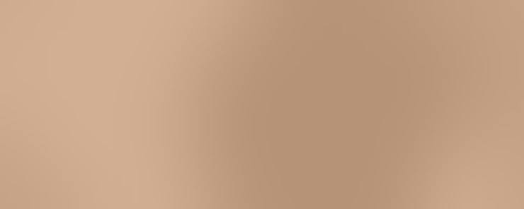

불룩한 눈밑을 평평하게 이어 준 경우
2026.09.12 · 사례 예시
Before
로그인 후 보실 수 있습니다.
수술 전 사진은 회원에게만 공개됩니다After

01 Concern
어떤 고민이 있었나요
눈밑이 불룩하고 그 아래 고랑이 깊어 늘 피곤해 보인다는 말을 자주 들었습니다. 원하는 방향과 피하고 싶은 모습을 먼저 나눠 적어 보았습니다.
02 Design
어떻게 수술했나요
피부 처짐이 적어 결막 쪽으로 접근해 지방을 고랑 쪽으로 옮기는 방법을 골랐습니다. 필요하지 않은 수술은 계획에서 뺐습니다.
03 Recovery
회복은 어떻게 진행되었나요
6주 시점에는 멍과 붓기가 대부분 빠졌습니다. 옮긴 지방이 자리 잡기까지는 조금 더 걸립니다. 회복 단계마다 찜질과 생활 습관을 따로 안내했습니다.
04 After
그 후의 이야기
불룩함과 그늘이 함께 줄어 인상이 한결 밝아졌습니다. 처음 상담에서 정한 방향에서 벗어나지 않았습니다.
05 Director
한서율 원장
이 경우는 지방을 빼지 않고 꺼진 고랑 쪽으로 옮겼습니다. 불룩한 곳과 꺼진 곳을 함께 확인했습니다. 회복 중에 불편한 점이 있으면 바로 연락하시도록 안내했습니다.